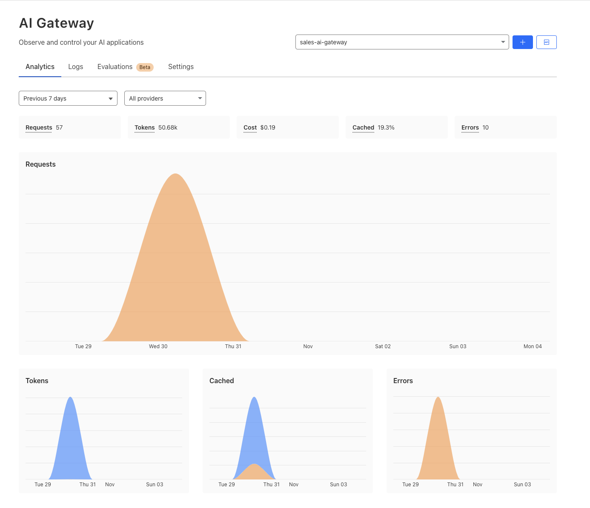
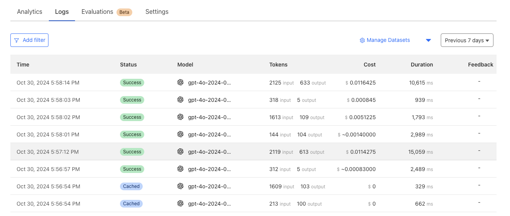
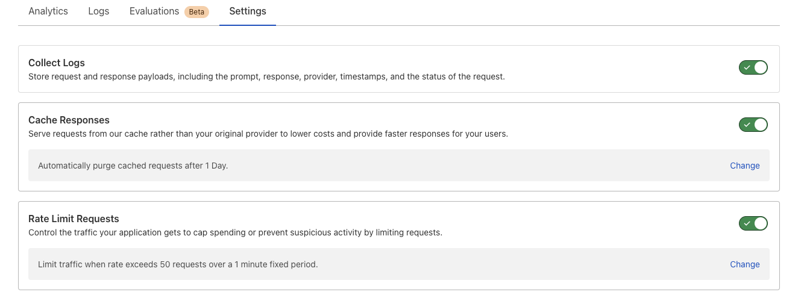
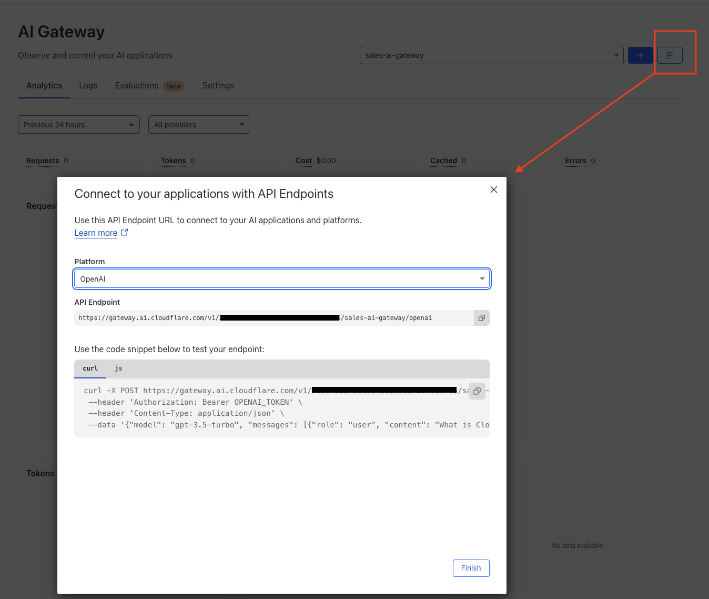
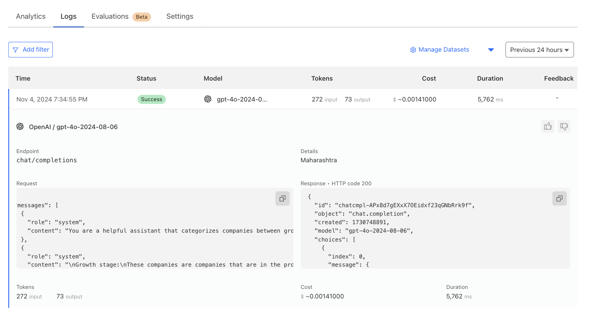

As we build more and more Gen AI-integrated applications, it has become hard to identify the costs associated with using third-party AI APIs like OpenAI, and Amazon Bedrock. Even though tools like LangSmith help us to monitor the queries made to the external AI systems, they need to be used with the LangChain framework. Cloudflare recently announced its version of the AI Monitoring, Caching, and Observability service called Cloudflare AI Gateway. It supports most of the generally available AI platforms and it can be set up with very minimal efforts into any AI driven applications.
In this post, we'll explore Cloudflare AI Gateway's features and how to integrate it with OpenAI.
Need for dedicated monitoring and caching for AI Applications.
When the Gen AI applications scale, the API costs related to AI APIs increase proportionately, eventually, it becomes hard to track the unit costs for a particular transaction, and also it becomes costly. Since the AI costs are associated with the number of tokens used in each of the queries you make to API, it is not straightforward to measure the cost with traditional observability platforms.
Most of the famous AI platforms like OpenAI, and Anthropic have their own setup to monitor the cost associated with the APIs, but if you are relying on multiple providers then the necessity of having a unified dashboard increases. In some cases, the queries you make to these platforms will also be repetitive, so some of the implementations resort to having a cache layer to save the calls being made to the AI platforms.
Cloudflare's new AI Gateway solves just this problem. It is a proxy that you can use with most of the AI platforms, which will track all the requests from your application to the AI applications. Its major features include,
Analytics
Helps to gather metrics from multiple providers to view traffic patterns and monitor usage, including request counts, token consumption, and costs over time.

Real time logs
CloudWatch like logging is available for tracking individual request/response data, cost, cache hit or miss, request duration, etc.

Caching
Set up custom caching rules and leverage Cloudflare's cache to handle repeat requests, reducing reliance on the original model provider API to save on costs and minimize latency.
Rate Limiting
Manage your application's scalability by setting request limits to control costs and prevent potential abuse.

Getting Started with Cloudflare AI Gateway and OpenAI
For all the 10+ providers Cloudflare AI Gateway supports, they provide a unique proxy URL that consists of your Cloudflare Account ID and Gateway ID.
https://gateway.ai.cloudflare.com/v1/<cloudflare-account-id>/<cloudflare-ai-gateway-id/name>/<provider-name>/
To create the AI Gateway, just log on to your Cloudflare Account, Under AI, Click on AI Gateway and Click on Create Button. Type in the Gateway ID (This is a slug that will be used in the proxy URL later). Once you submit, you will be able to see the dashboard for that gateway. To get the Proxy URL for your gateway, Click on the API button beside the Create Button.

You can test if the proxy is working by running the generated CURL request along with your OpenAI API Key.
Now, you will have to use this in your code to make your request go through the Proxy to your AI API Provider. In this example, I will be using OpenAI Python SDK to set the Proxy URL. OpenAI provides a parameter called base_url that you can use to configure the Proxy URL generated by Cloudflare.
openai.api_key = os.environ.get("OPEN_AI_KEY")
openai.base_url = "https://gateway.ai.cloudflare.com/v1/<cloudflare-account-id>/sales-ai-gateway/openai/"
An important thing to note here is that the URL needs to have a trailing slash which at the time of writing this post is not clear in their documentation. If you fail to add the trailing slash, it fails with the error Invalid Provider.
Once this is set, you can make any request to OpenAI, it will be routed through the Cloudflare AI Gateway Proxy provided. You will be able to see the request in the Logs section in real-time.

Pricing
AI Gateway's core features available today are offered for free, and all it takes is a Cloudflare account and one line of code to get started. Core features include dashboard analytics, caching, and rate limiting. Persistence of Logs for longer periods is a feature that is under beta at this time of this writing and would be part of the premium plan of Cloudflare. For the latest information on the pricing check their pricing page.
References
This post was originally published on AntStack's Blog.